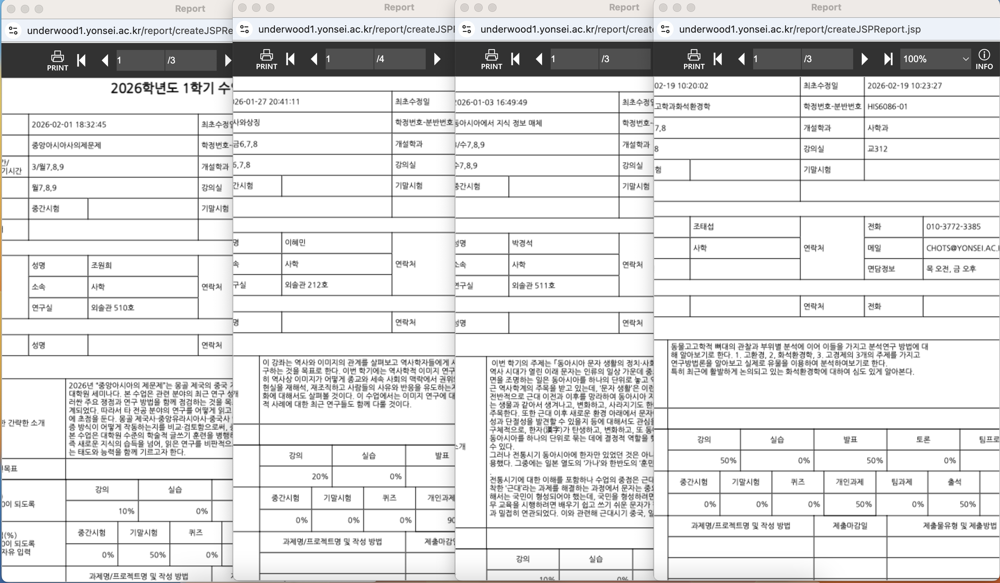
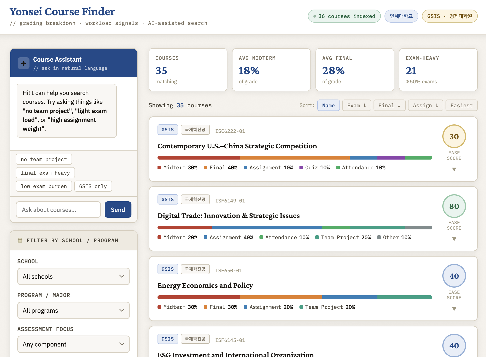

AI 驱动的选课决策工具——从真实痛点出发，用 OCR + LLM + 本地规则三层架构解决延世大学选课信息不透明问题。
延世大学每学期选课窗口极短，课程考核信息全藏于各课程独立PDF中，需逐一打开大量无标题页面比对，效率极低。如下图所示，每门课的考核规则散落在四个独立的Report页面中，页面格式不统一，期中/期末/作业占比需要人工逐一翻找。

↑ 延世大学选课系统实际截图：每门课考核信息散落在独立PDF页面中，需逐一打开比对
主要用户：延世大学在读学生，尤其是奖学金学生（对绩点高度敏感）和选课经验少的新生（信息不对称更严重）。次要用户：对考核结构有明确偏好的研究生（希望避开高压课程）。
设计 Ease Score 指标模型：Ease Score = 100 - (期中占比 + 期末占比)。只用考试指标而不加权其他维度，因为「考试压力」是跨用户的最大共识，而作业、出勤等因人而异。将考试占比换算为0–100直观分值，用户无需手动计算即可快速比较课程压力。
搭建OCR管道批量抽取课程考核占比，但OCR对韩英混排识别率不稳定。设计override底座机制：OCR跑完后可手动修正，保证MVP阶段工具始终可用。这是「先让产品能用，再让产品好用」的迭代逻辑。
集成Claude API实现自然语言搜索——用户输入口语化需求（如「不要有 quiz」），Claude理解后返回符合条件的课程ID列表，前端过滤展示。超过5秒timeout自动降级为本地关键词匹配，保障演示稳定性。

↑ Yonsei Course Finder 产品界面：支持三级联动筛选 + AI 自然语言搜索
向延世各学院学生微信群和Kakao Talk群发送链接，话术核心是痛点描述优先，而非功能介绍：
初始触达约400人，通过同学转发实现自然增长，收集50+条真实用户反馈。
如果重来一遍，有三件事会做得不一样：第一，先做5-10个用户访谈再动手，而不是凭自己的痛点直接开始；第二，冷启动方案（众包机制）应在产品设计阶段就规划好；第三，设定清晰的成功指标——比如「使用工具后的选课改变率」，让迭代方向更有数据依据。